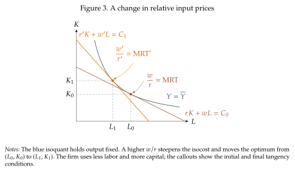
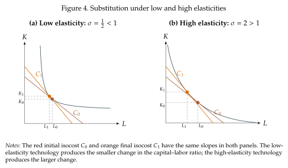

Substitution between capital and labor¶
We now get to the key question in this section (and really in all of the course): How substitutable are capital and labor? This turns out to be an incredibly deep question because it really depends on how we model the way in which labor is used for production. However, we can make progress now by asking a more specialized question:
If labor becomes 1 percent more expensive relative to capital,
by what percentage will a firm change its capital-labor ratio?
That might sound like a weird way to pose the question, but it really does speak to the way in which capital and labor are determined. To see it, let's return to Figure 2 and see what happens when labor becomes more expensive relative to capital. This can be because wages go up, or because the cost of capital goes down. In any case, the ratio \(\frac{w}{r}\) goes up. This ratio is exactly the slope of the isocost curve, which is now steeper. So the new optimal combination of inputs involves less labor and more capital as in Figure 3. But, by how much?
The difficulty in giving a direct answer is that, while we intuitively understand that the firm will substitute labor for capital, we only know that the firm will do so while staying on the same isoquant. It does not tell us how far the firm will move along the isoquant when relative factor prices change. Two technologies can have the same MRT at the current input mix and the current input prices and very different responses to a higher wage or a cheaper machine. To distinguish them we need to measure how the MRT changes as the input mix changes.

The key to providing an answer is in the optimality conditions of the firm. Capital and labor will be always chosen so that the MRT equals the ratio of input prices \(\,\left(MRT\,=\,\frac{w}{r}\right)\) as we see in Figure 3. We get this directly from (1.23). This gives you a direct link between changes in market prices and the properties of the firm's production technology. A change in the relative price must be matched by a change in the marginal rate of transformation. So, we can change our question to one about the production function:
If the MRT increases by 1 percent, by what percentage will the capital-labor ratio change?
This question has a direct mathematical formulation, and its answer is given in terms of the elasticity of substitution:
Definition 1.4: Elasticity of substitution
The Hicks elasticity of substitution between capital and labor is
Technology and output are held fixed; the second equality uses the firm's optimality condition \(\operatorname{MRT}\,=\,w/r\).
A small change in the MRT rotates the tangent to the isoquant; the associated change in capital to output ratio, \(k\,\equiv\,K/L\), tells us how much the technique changes. This "associated change" is the elasticity of substitution. The elasticity is a percentage response. If \(\sigma=2\), a one-percent increase in \(w/r\) leads the firm to raise \(K/L\) by approximately two percent. Labor has become more expensive relative to capital, and the firm responds strongly by using a more capital-intensive technique. If \(\sigma=0.2\), the same relative price change produces only a 0.2 percent change in \(K/L\).
The MRT describes the technological tradeoff between capital and labor at a point.
The elasticity of substitution describes how the chosen input ratio changes when that tradeoff---and therefore the relative factor price---changes.
Three cases will be useful:
- If \(\sigma>1\), the input ratio responds more than proportionally. We will call capital and labor relatively easy to substitute.
- If \(\sigma=1\), the input ratio responds proportionally. This is the value generated everywhere by the Cobb--Douglas technology.
- If \(0<\sigma<1\), the input ratio responds less than proportionally. The inputs are harder to substitute than in the Cobb--Douglas benchmark.
Figure 4 contrasts two technologies: one with low elasticity, \(\sigma=\frac{1}{2}\), and one with high elasticity, \(\sigma=2\). The panels use the same change in relative prices, so their isocosts have the same slopes. The outcome is that the same relative-price change produces different substitution patterns between capital and labor.
